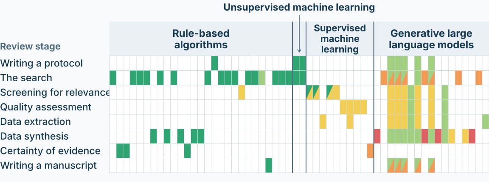

People define the rules
used to compare records.
Patterns emerge without
supplied labels.
Results depend on the records and the method.
Columns are tools. Rows are review stages. Colours show recommendations.

Screening for relevance
Translation support
Human verification
required
Check the translation
against the original.
Relevance judgements
Requires validation
within the review
Evaluate the screening
procedure’s performance.
Selected screening cells from the map.
Prioritised screening with early stopping
Skills, assessment time and a workable process
Instructions, access, data handling, version and settings
Missing stopping evidence must be resolved before reliance.